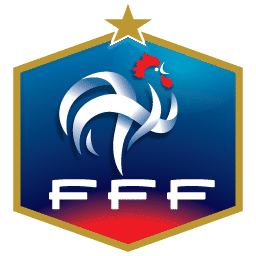
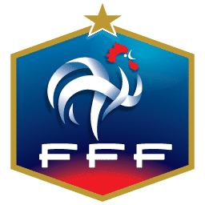

Chicago Invitational
Despite having limited experience playing FIFA, Charlie entered the tournament with determination. As a newcomer, he delivered an impressive performance, managing to limit second-ranked player Michael to just two goals. It's worth noting that Michael was playing with Germany, considered one of the strongest teams in the game. Although Charlie lost the match by a score of 2-0, his resilience and skill in challenging such a formidable opponent showcased his potential and marked him as a player to watch in future competitions.
 
